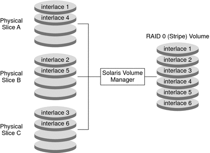
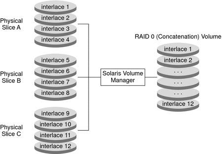
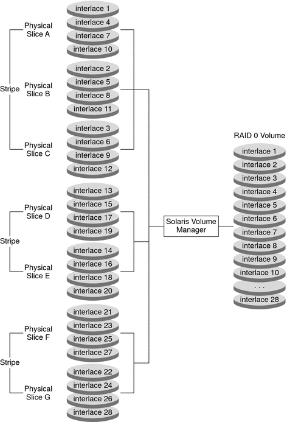

|
|||
|
1. Getting Started With Solaris Volume Manager 2. Storage Management Concepts 3. Solaris Volume Manager Overview 4. Solaris Volume Manager for Sun Cluster (Overview) 5. Configuring and Using Solaris Volume Manager (Scenario) 8. RAID-0 (Stripe and Concatenation) Volumes (Overview) Background Information for Creating RAID-0 Volumes 9. RAID-0 (Stripe and Concatenation) Volumes (Tasks) 10. RAID-1 (Mirror) Volumes (Overview) 11. RAID-1 (Mirror) Volumes (Tasks) 12. Soft Partitions (Overview) 16. Hot Spare Pools (Overview) 20. Maintaining Solaris Volume Manager (Tasks) 21. Best Practices for Solaris Volume Manager 22. Top-Down Volume Creation (Overview) 23. Top-Down Volume Creation (Tasks) 24. Monitoring and Error Reporting (Tasks) 25. Troubleshooting Solaris Volume Manager (Tasks) A. Important Solaris Volume Manager Files B. Solaris Volume Manager Quick Reference |
Overview of RAID-0 VolumesRAID-0 volumes, are composed of slices or soft partitions. These volumes enable you to expand disk storage capacity. They can be used either directly or as the building blocks for RAID-1 (mirror) volumes, and soft partitions. There are three kinds of RAID-0 volumes:
Note - A component refers to any devices, from slices to soft partitions, used in another logical volume. A stripe volume spreads data equally across all components in the volume, while a concatenation volume writes data to the first available component until it is full, then moves to the next available component. A concatenated stripe volume is simply a stripe volume that has been expanded from its original configuration by adding additional components. RAID-0 volumes allow you to quickly and simply expand disk storage capacity. The drawback is that these volumes do not provide any data redundancy, unlike RAID-1 or RAID-5 volumes. If a single component fails on a RAID-0 volume, data is lost. For sequential I/O operations on a stripe volume, Solaris Volume Manager reads all the blocks in a segment of blocks (called an interlace) on the first component, then all the blocks in a segment of blocks on the second component, and so forth. For sequential I/O operations on a concatenation volume, Solaris Volume Manager reads all the blocks on the first component, then all the blocks of the second component, and so forth. On both a concatenation volume and a stripe volume, all I/O operations occurs in parallel. You can use a RAID-0 volume that contains a single slice for any file system. You can use a RAID-0 volume that contains multiple components for any file system except the following:
Note - When you mirror root (/), /usr, swap, /var, or /opt, you put the file system into a one-way concatenation or stripe (a concatenation of a single slice) that acts as a submirror. This one-way concatenation is mirrored by another submirror, which must also be a concatenation. RAID-0 (Stripe) VolumeA RAID-0 (stripe) volume is a volume that arranges data across one or more components. Striping alternates equally-sized segments of data across two or more components, forming one logical storage unit. These segments are interleaved round-robin so that the combined space is made alternately from each component, in effect, shuffled like a deck of cards. Note - To increase the capacity of a stripe volume , you need to build a concatenated stripe volume. See RAID-0 (Concatenated Stripe) Volume. Striping enables multiple controllers to access data at the same time, which is also called parallel access. Parallel access can increase I/O throughput because all disks in the volume are busy most of the time servicing I/O requests. An existing file system cannot be converted directly to a stripe. To place an existing file system on a stripe volume , you must back up the file system, create the volume, then restore the file system to the stripe volume. Interlace Values for a RAID–0 (Stripe) VolumeAn interlace is the size, in Kbytes, Mbytes, or blocks, of the logical data segments on a stripe volume. Depending on the application, different interlace values can increase performance for your configuration. The performance increase comes from having several disk arms managing I/O requests. When the I/O request is larger than the interlace size, you might get better performance. Note - RAID-5 volumes also use an interlace value. See Overview of RAID-5 Volumes for more information. When you create a stripe volume, you can set the interlace value or use the Solaris Volume Manager default interlace value of 512 Kbytes. Once you have created the stripe volume, you cannot change the interlace value. However, you could back up the data on it, delete the stripe volume, create a new stripe volume with a new interlace value, and then restore the data. Scenario—RAID-0 (Stripe) VolumeFigure 8-1 shows a stripe volume that is built from three components (slices). It also illustrates how data is written onto the volume components according to the interlace size and using the round-robin technique. When Solaris Volume Manager writes data onto the components of a stripe volume, it writes data blocks of the interlace width to Disk A (interlace 1), Disk B (interlace 2), and Disk C (interlace 3). Solaris Volume Manager then repeats the pattern writing to Disk A (interlace 4), Disk B (interlace 5), Disk C (interlace 6), and so forth. The interlace value sets the size of each time data is written to a slice. The total capacity of the stripe volume equals the number of components multiplied by the size of the smallest component. (If each slice in the following example were 2 Gbytes, the volume would equal 6 Gbytes.) Figure 8-1 RAID-0 (Stripe) Volume ExampleRAID-0 (Concatenation) VolumeA RAID–0 (concatenation) volume is a volume whose data is organized serially and adjacently across components, forming one logical storage unit. Use a concatenation volume to get more storage capacity by combining the capacities of several components. You can add more components to the concatenation volume as the demand for storage grows. A concatenation volume enables you to dynamically expand storage capacity and file system sizes online. A concatenation volume allows you to add components even if the other components are currently active. A concatenation volume can also expand any active and mounted UFS file system without having to bring down the system. In general, the total capacity of a concatenation volume is equal to the total size of all the components in the volume. If a concatenation volume contains a slice with a state database replica, the total capacity of the volume is the sum of the components minus the space that is reserved for the replica. You can also create a concatenation volume from a single component. Later, when you need more storage, you can add more components to the volume. Note - You must use a concatenation volume to encapsulate root (/), swap, /usr, /opt, or /var when mirroring these file systems. Scenario—RAID-0 (Concatenation) VolumeFigure 8-2 illustrates a concatenation volume that is built from three components (slices). It also illustrates how data is written onto the volume components according to the interlace size and onto each slice sequentially. The data blocks are written sequentially across the components, beginning with Slice A. You can envision Slice A as containing logical data blocks 1 through 4. Disk B would contain logical data blocks 5 through 8. Drive C would contain logical data blocks 9 through 12. The total capacity of volume would be the combined capacities of the three slices. If each slice were 2 Gbytes, the volume would have an overall capacity of 6 Gbytes. Figure 8-2 RAID-0 (Concatenation) Volume ExampleRAID-0 (Concatenated Stripe) VolumeA RAID–0 (concatenated stripe) volume is a stripe that has been expanded by adding additional components (stripes). To set the interlace value for a concatenated stripe volume, at the stripe level, use either the Enhanced Storage tool within the Solaris Management Console, or the metattach -i command. Each stripe within the concatenated stripe volume can have its own interlace value. When you create a concatenated stripe volume from scratch, if you do not specify an interlace value for a particular stripe, it inherits the interlace value from the previous stripe added to the volume. Example—RAID-0 (Concatenated Stripe) VolumeFigure 8-3 illustrates a concatenated stripe volume that is a concatenation of three stripes. The first stripe consists of three slices, Slice A through C, with an interlace value of 512 Kbytes. The second stripe consists of two slices, Slice D and E, and uses an interlace value of 1024 Kbytes32 Kbytes. The last stripe consists of a two slices, Slice F and G. Because no interlace value is specified for the third stripe, it inherits the value from the stripe that was added before it, which in this case is 1024 Kbytes32 Kbytes. Sequential data blocks are added to the first stripe until that stripe has no more space. Data blocks are then added to the second stripe. When this stripe has no more space, data blocks are added to the third stripe. Within each stripe, the data blocks are interleaved according to the specified interlace value. Figure 8-3 RAID-0 (Concatenated Stripe) Volume Example |
||
|